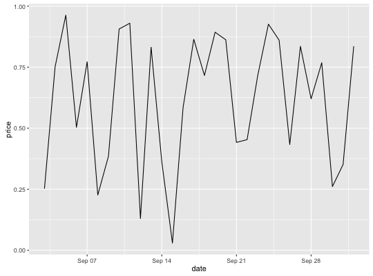
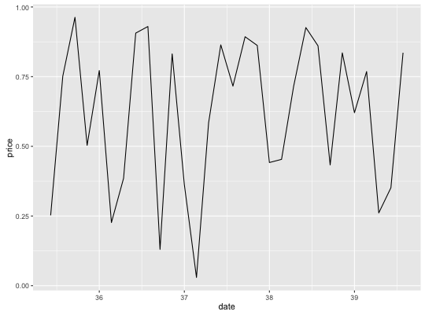
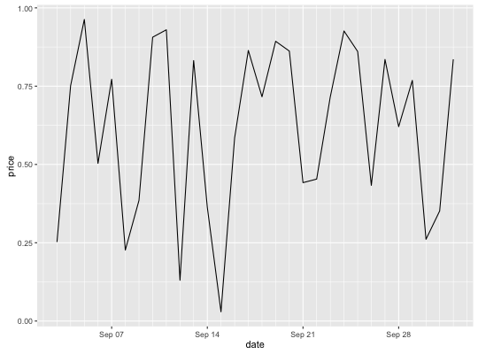
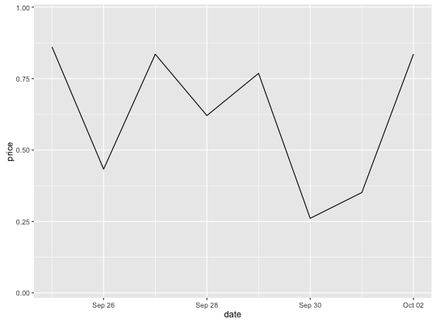

scale_x_date(name = waiver(), breaks = waiver(), date_breaks = waiver(), labels = waiver(), date_labels = waiver(), minor_breaks = waiver(), date_minor_breaks = waiver(), limits = NULL, expand = waiver())scale_y_date(name = waiver(), breaks = waiver(), date_breaks = waiver(), labels = waiver(), date_labels = waiver(), minor_breaks = waiver(), date_minor_breaks = waiver(), limits = NULL, expand = waiver())scale_x_datetime(name = waiver(), breaks = waiver(), date_breaks = waiver(), labels = waiver(), date_labels = waiver(), minor_breaks = waiver(), date_minor_breaks = waiver(), limits = NULL, expand = waiver())scale_y_datetime(name = waiver(), breaks = waiver(), date_breaks = waiver(), labels = waiver(), date_labels = waiver(), minor_breaks = waiver(), date_minor_breaks = waiver(), limits = NULL, expand = waiver())
NULL, the default, the name of the scale is taken from the first
mapping used for that aesthetic.NULL for no breaks
waiver() for the default breaks computed by the
transformation object
breaks and date_breaks are
specified, date_breaks wins.NULL for no labels
waiver() for the default labels computed by the
transformation object
breaks)
strftime. If both labels
and date_labels are specified, date_labels wins.NULL for no minor breaks
waiver() for the default breaks (one minor break between
each major break)
minor_breaks and
date_minor_breaks are specified, date_minor_breaks wins.NA to refer to the existing minimum or maximum.c(0.05, 0) for continuous variables, and c(0, 0.6) for
discrete variables.Use scale_*_date with Date variables, and
scale_*_datetime with POSIXct variables.
last_month <- Sys.Date() - 0:29 df <- data.frame( date = last_month, price = runif(30) ) base <- ggplot(df, aes(date, price)) + geom_line() # The date scale will attempt to pick sensible defaults for # major and minor tick marks. Override with date_breaks, date_labels # date_minor_breaks arguments. base + scale_x_date(date_labels = "%b %d")
base + scale_x_date(date_breaks = "1 week", date_labels = "%W")
base + scale_x_date(date_minor_breaks = "1 day")
# Set limits base + scale_x_date(limits = c(Sys.Date() - 7, NA))
scale_continuous for continuous position scales.